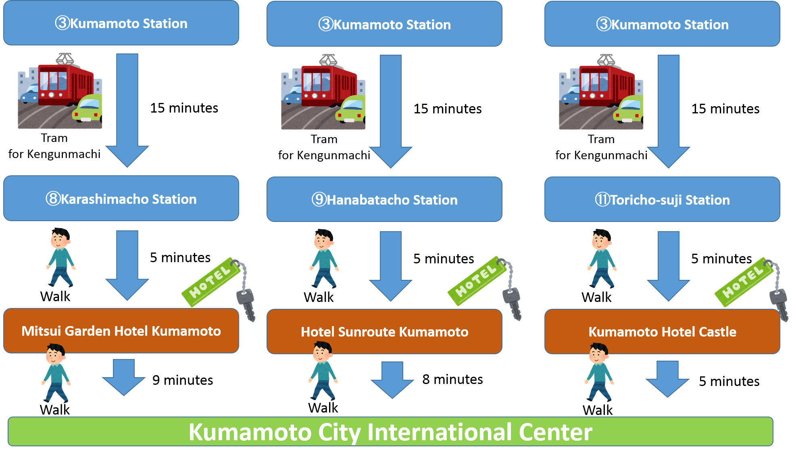

Sixth Plenary Meeting of UN-GGIM-AP
Accommodations
There are many hotels around Kumamoto City Information Center, the Plenary Meeting venue.
For information about major hotels, please refer to tourist information Website.
Kumamoto Nagomi Tourism Site
Considering access to the meeting venue and accommodation fee, the host has made block reservations at the following three hotels of different types.
A certain number of single rooms have been reserved until July 28.
Those who wish to stay at one of the three hotels are asked to include the hotel name of your choice and check in and check out dates in the Registration Form of the
Meeting and submit the form to the host by July 28, until which the host keeps the reservations.
Please note that these single rooms will be open to the general public after July 29.
Following the application for the hotel from meeting participants, the host will send information (participant name and dates of the stay) to the hotel.
When the room is available, the host will inform the participants of the contact information for booking. Then, participants are requested to contact the hotel
in person and finalize the booking for themselves.
The Hotels Recommended by the Host
Access: Between the Hotels, JR Kumamoto Station and Plenary Venue.
From Kumamoto Station to the respective hotels, take Kumamoto City Tram bound for Kengunmachi Station.
Stops: No.3 Kumamoto Station, No.8 Karashimacho for Mitsui Garden Hotel Kumamoto, No.9 Hanabatacho for Hotel Sunroute Kumamoto and
No.11 Toricho-suji for Kumamoto Hotel Castle.
Kumamoto City tram Route map


Copyright © UN-GGIM-AP
Supported by:Geospatial Information Authority of Japan
GSI International Twitter
GSI International Facebook
This page was last updated 2017-06-13